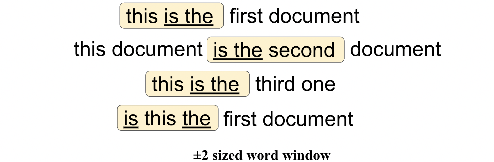

4.2.2 GloVe
Contents
4.2.2 GloVe#
GloVe stands for Global Vectors for Word Representation. This algorithm is an improvement over the Word2Vec (link to previous chapter) approach as it considers global statistics instead of local statistics.
Here, global statistics mean, the words considered from across the whole corpus. In this method, we take the corpus and iterate through it and get the co-occurrence (link to previous chapter) of each word with other words in the corpus.
Note
GloVe method is built on an important idea:
You can derive semantic relationships between words from the co-occurrence matrix.
For example let our corpus be as follows:
This is the first document. This document is the second document. This is the third one. Is this the first document?
Now assume that we have removed all the punctuations from the documents and also we have converted all the words to lower case. This is what pre-processed documents would look like:
Document-1 (Sentence-1): this is the first document
Document-2 (Sentence-2): this document is the second document
Document-3 (Sentence-3): this is the third one
Document-4 (Sentence-4): is this the first document
The below matrix represents a co-occurrence matrix whose values denote the count of each pair of words occurring together in the given example corpus.

The entry ‘4’ in the following table, means that we had 4 sentences in our text where is was surrounded by the.
document |
first |
is |
one |
second |
the |
third |
this |
|
|---|---|---|---|---|---|---|---|---|
document |
0 |
2 |
1 |
0 |
1 |
4 |
0 |
1 |
first |
2 |
0 |
1 |
0 |
0 |
2 |
0 |
1 |
is |
1 |
1 |
0 |
0 |
1 |
4 |
1 |
4 |
one |
0 |
0 |
0 |
0 |
0 |
1 |
1 |
0 |
second |
1 |
0 |
1 |
0 |
0 |
1 |
0 |
0 |
the |
4 |
2 |
4 |
1 |
1 |
0 |
1 |
3 |
third |
0 |
0 |
1 |
1 |
0 |
1 |
0 |
0 |
this |
1 |
1 |
4 |
0 |
0 |
3 |
0 |
0 |
Note that the co-occurrence matrix is always symmetric - the entry with the row word ‘the’ and the column word ‘is’ will be 4 as well (as these words co-occur in the very same sentences).
Finally, after computing the probability of occurrence for the word "first" given "document", \(P(\text{first} | \text{document})\) and "first" given "third", \(P(\text{first} | \text{third})\), it turns out that the most relevant word to "first" is "document" as compared to "third".
Python Code for GloVe#
GloVe has pre-defined word vectors for around every 6 billion words of English literature along with many other general use characters like comma, braces, and semicolons. This is created by Stanford University.
There are 4 varieties available in GloVe:
Four varieties are: 50d, 100d, 200d and 300d.
Here d stands for dimension. 100d means, in this file each word has an equivalent vector of size 100. Glove files are simple text files in the form of a dictionary. Words are key and word vectors are values of key.
Import essential libraries#
import numpy as np
from keras.preprocessing.text import Tokenizer
Download the pretrained GloVe data files#
!wget http://nlp.stanford.edu/data/glove.6B.zip
--2023-01-11 14:45:00-- http://nlp.stanford.edu/data/glove.6B.zip
Resolving nlp.stanford.edu (nlp.stanford.edu)... 171.64.67.140
Connecting to nlp.stanford.edu (nlp.stanford.edu)|171.64.67.140|:80... connected.
HTTP request sent, awaiting response... 302 Found
Location: https://nlp.stanford.edu/data/glove.6B.zip [following]
--2023-01-11 14:45:01-- https://nlp.stanford.edu/data/glove.6B.zip
Connecting to nlp.stanford.edu (nlp.stanford.edu)|171.64.67.140|:443... connected.
HTTP request sent, awaiting response... 301 Moved Permanently
Location: https://downloads.cs.stanford.edu/nlp/data/glove.6B.zip [following]
--2023-01-11 14:45:01-- https://downloads.cs.stanford.edu/nlp/data/glove.6B.zip
Resolving downloads.cs.stanford.edu (downloads.cs.stanford.edu)... 171.64.64.22
Connecting to downloads.cs.stanford.edu (downloads.cs.stanford.edu)|171.64.64.22|:443... connected.
HTTP request sent, awaiting response... 200 OK
Length: 862182613 (822M) [application/zip]
Saving to: ‘glove.6B.zip’
glove.6B.zip 100%[===================>] 822.24M 5.01MB/s in 2m 39s
2023-01-11 14:47:40 (5.17 MB/s) - ‘glove.6B.zip’ saved [862182613/862182613]
Unzipping the zipped folder#
!unzip glove*.zip
Archive: glove.6B.zip
inflating: glove.6B.50d.txt
inflating: glove.6B.100d.txt
inflating: glove.6B.200d.txt
inflating: glove.6B.300d.txt
Initialising a tokenizer and fitting it on the training dataset#
train = ['this is the first document',
'this document is the second document',
'this is the third one',
'is this the first document']
vocab_size = 8
tokenizer = Tokenizer(num_words=5000)
tokenizer.fit_on_texts(train)
Opening GloVe file#
glove_file = open('glove.6B.50d.txt', encoding="utf8")
Creating a dictionary to store the embeddings#
Filling the dictionary of embeddings by reading data from the GloVe file
embeddings_dictionary = {}
for line in glove_file:
records = line.split()
word = records[0]
vector_dimensions = np.asarray(records[1:], dtype='float32')
embeddings_dictionary[word] = vector_dimensions
glove_file.close()
Glove embeddings on our custom training dataset#
Parsing through all the words in the training dataset and fetching their corresponding vectors from the dictionary and storing them in a matrix.
tokenizer.word_index.items()
dict_items([('this', 1), ('is', 2), ('the', 3), ('document', 4), ('first', 5), ('second', 6), ('third', 7), ('one', 8)])
embedding_matrix = np.zeros((vocab_size, 50))
for word, index in tokenizer.word_index.items():
embedding_vector = embeddings_dictionary.get(word)
if embedding_vector is not None:
embedding_matrix[index-1] = embedding_vector
Displaying embedding matrix#
embedding_matrix.shape
(8, 50)
We see that each eight words in the vocabulary \(V\) has a word embedding of size 50.
GloVe embeddings using gensim#
The GLoVe format is slightly different – missing a 1st-line declaration of vector-count & dimensions – than the format that load_word2vec_format() supports in gensim.
You can download the GloVe pre-trained word vectors (like the one we did) and load them easily with gensim.
The first step is to convert the GloVe file format to the word2vec file format. The only difference is the addition of a small header line. This can be done by calling the glove2word2vec() function. For example:
from gensim.scripts.glove2word2vec import glove2word2vec
# input glove file
glove_input_file = 'glove.6B.100d.txt'
# output file we want
word2vec_output_file = 'glove.6B.100d.txt.word2vec'
glove2word2vec(glove_input_file, word2vec_output_file)
(400000, 100)
Now we can load it and perform the same king – man + woman = queen test as in the Word2Vec (link to previous chapter). The complete code listing is provided below. Note that the converted file is ASCII format, not binary, so we set binary=False when loading.
from gensim.models import KeyedVectors
# load the Stanford GloVe model
filename = 'glove.6B.100d.txt.word2vec'
model = KeyedVectors.load_word2vec_format(filename, binary=False)
# calculate: (king - man) + woman = ?
result = model.most_similar(positive=['woman', 'king'], negative=['man'], topn=1)
print(result)
[('queen', 0.7698541283607483)]
Running the example prints the same result of queen.
Code source for the Gensim part
Code source for Glove embeddings on our custom training dataset